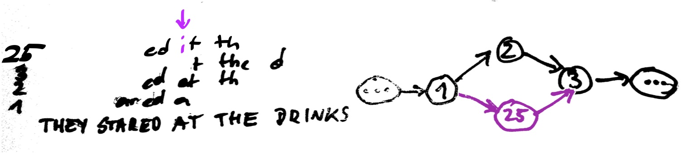
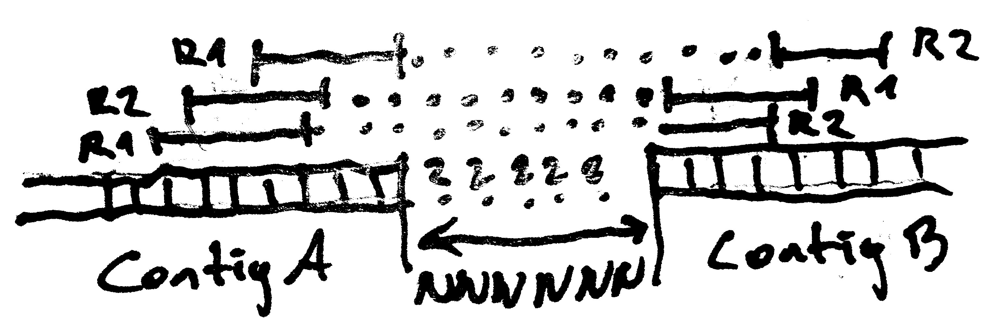
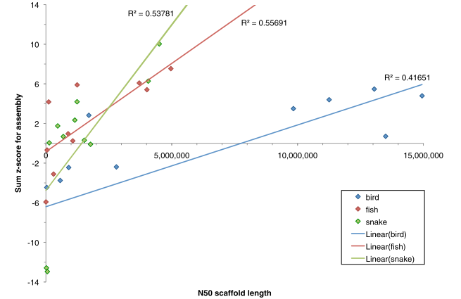
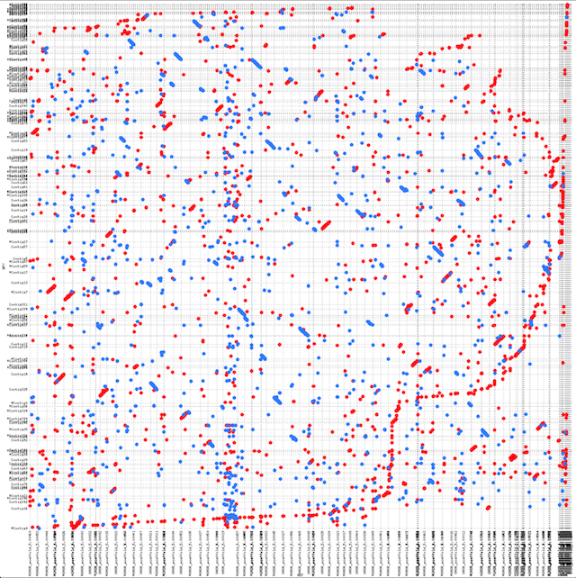

Error Correction of Pacbio reads with Illumina (details later)
Adapter trimming
Quality trimming
Deduplication
Some assemblers depend on other, existing tools to perform these steps or do one or more as part of their pipeline. If so, don't use other tools - see Assemblathon.
Graph Construction
assembling hemingway
Graph Construction
Suffix-to-Prefix Graph
Graph Construction - Path Enumeration
They stared at the drinks were gone
They stared at the drinks went were gone
They stared at the drinks the drinks were gone
...
Look for paths that
traverse every edge once (Euler)
visit every node once (Hamiltonian)
Graph Construction - Path Enumeration
(THEY ST)ARED AT THE DRINKS. THE DRINKS WENT WARM. THEY DRANK.
Longest Path
Graph Construction - Strategies
Overlap Consensus Layout, eg. SGA
More or less as shown. Minimum length of overlap k is the parameter that determines the graph complexity. Should ideally be as large as the dataset allows (sequencing errors, polyploidity). The ideal assembly visits all nodes exactly once (Hamilton-Path).
String Graphs are a special variant where all transitive edges ((X, Y), (X, Z), (Y, Z)) are reduced to ((X, Z)), irreducible edges.
Graph Construction - Strategies
K-mer based, eg. Abyss, SOAPdenovo
Nodes represent all kmers in the reads. Two kmers are connected if there is a k-1 overlap between the nodes (de Bruijn graph). The Euler path that visits each edge exactly once corresponds to a chromosome in an ideal assembly.
K-mer sized (parameter k) should be chosen large enough to reduce the number of wrong connections between contigs, but small enough to allow for errors.
Hybrid strategies proposed: Combine contig and graph output from two types of assemblers.
Graph Simplification
Graph structure is very complex due to
transitive edges like ((1,2), (1,3), (2,3))
consecutive nodes like ((1,2), (2,3), (3,4))
error reads (branches that converge again later)
spurious branch points on repeat edges
dead ends (tips)
Graph Simplification - Node Merging
Collapse nodes that connect unambiguously (without branching) into one node representing the merged sequence.
1. Merge Transitive Edges
Graph Simplification - Node Merging
Collapse nodes that connect unambiguously (without branching) into one node representing the merged sequence.
2. Merge Consecutive Nodes
Graph Simplification - Dead End Removal
Sometimes also: tip erosion. Remove all nodes with connections only in one direction. These can be caused by low coverage regions and read errors. Can also shorten valid contigs!
Dead End
Graph Simplification - Bubble Popping
Bubbles due to sequencing errors or polyploid genomes, heterozygosity. Selection of branch based on different criteria like coverage, quality.
Bubble Popping
Graph Simplification - Repeat tangles
Formed in repeated regions, were many reconstructions are possible. Resolved by forming parallel paths. Paired-End constraints can be used to discard invalid edges (too short, too long reconstruction).
Create parallel paths
Postprocessing
Contigs: Build contiguous stretches of sequence, filter and correct (consensus)
Scaffolds: Either with built-in scaffolder or external program. Most assemblers come with their own scaffolder for PE or mate pair library information. Using Pacbio CLRs not yet popular.
Missing sequence information is filled with N (assembly gaps)
Postprocessing - Scaffolding
Use paired end information to join and orient contigs. Can also detect and filter misjoined contigs.
Scaffolding
Differences between Assemblers
From the SGA paper:
[...] We then perform the standard assembly graph post-processing step of removing tips from the graph where a vertex only has a connection in one direction [...]
we have developed an algorithm [...] similar to the ‘‘bubble-popping’’ ap- proaches taken by de Bruijn graph assemblers [...]
Similar to other approaches to scaffolding (Pop et al. 2004), our method is based on constructing a graph of the relationships between contigs.
Differences between Assemblers
They all follow the same principles! Main "unique selling points" seem to be algorithms and data structures. The strategies and heuristics employed in graph simplification and postprocessing make the difference in results.
Differences between Assemblers ... and datasets
Bradnam KR et al. Assemblathon 2: evaluating de novo methods of genome assembly in three vertebrate species. Gigascience. 2013;2(1):10.
Data Sets and Assembly Results
Ustilago bromivora, a fungus with a nice compact genome of about 20Mb.
(no information about mapping to original reads from pipeline)
Computationally very intense (good for keeping clusters busy)
Reduction in Depth makes assembly seem infeasible
SMRTanalysis PreAssembler Workflow
could in theory be run from the web interface, but only with PacBio input (error correcting CLRs with circular consensus reads (CCR). Needs .bas.h5 (primary analysis result from sequencer).
start a fake job with only the CLRs from web interface
interrupt, snatch settings.xml and input.xml from job directory
create Protocol.xml with alignment options and cluster parameters
create shell script to run different stages
receive jelly.out.fasta (do NOT run more than one PBJelly per directory!)
PBJelly
English AC, et al. PLoS One. 2012
Mapping with blasr
find supporting mappings on gap/contig edges
extract sequence information
local assembly of pacbio reads
PBJelly
Some problems: blasr dumped cores for some sequence chunks
Assembly crashed on certain pacbio reads
but results are still good!
PBJelly
Gap statistics
set
gapped.contigs
overall
overall.width
width.mean
cerulean
316
799
529462
1675.51
pbj.cerulean
152
224
64066
421.49
sga
337
612
17250
51.19
pbj.sga
26
31
927
35.65
soap
514
3084
33891
65.94
pbj.soap
246
2705
19088
77.59
PBJelly
set
# >2kb
N50
max
sga
183
234931
767671
SOAP
174
201830
541843
Cerulean
238
159023
489237
All Contig Stats
Contig lengths and N50
All Contig Stats
Contig lengths and counts
Conclusion
very subjective results overview
Quality Checks for Assembly Selection
Size Is Not Everything
Quality Assessment needed.
But we do not have the luxury of Assemblathon or GAGE to have a reference to compare to!
N50 vs sum of z-scores from different evaluations (Assemblathon 2)
Alignment to Close Relative (U. hordei)
Nucmer Alignment of SGA Scaffolds to U. hordei assembly
Alignment of PacBio reads
Aligned with bwa mem -a -T 60 -k 16 -A 2 -L 4 -t 8 -S -P -k 32
matching contigs
Alignment of PacBio reads
2D density plot of depth vs contig length
A number of contigs with very high depth (>300) were found - A random BLAST produced rDNA.
Alignment of PacBio reads
Various other results
CEGMA: Check for Presence of Core Genes
Parra G, et al. CEGMA: a pipeline to accurately annotate core genes in eukaryotic genomes. Bioinformatics. 2007;23(9):1061–7
Select 1788 KOGs (eukaryotic orthologous groups) from genes with high identity in organisms from Yeasts to Humans.
Use BLAST to find candidate regions
refine with GeneWise and HMMER
output GFF and report
Could be used to examine tentative gene structure!
CEGMA
CEGMA results
REAPR
Hunt M, et al. Genome Biol. 2013
REAPR output
REAPR
align reads back to assembly
infer mismatches and structural errors from paired information (expected insert size distribution)
analyse observed fragment coverage distribution (FCD) vs expected FCD
warn on soft-clipping
Literature
Simpson JT, Wong K, Jackman SD, et al. ABySS: a parallel assembler for short read sequence data. Genome Res. 2009;19(6):1117–23.
Bradnam KR, Fass JN, Alexandrov A, et al. Assemblathon 2: evaluating de novo methods of genome assembly in three vertebrate species. Gigascience. 2013;2(1):10.
Deshpande V, Fung E, Pham S, Bafna V. Cerulean: A hybrid assembly using high throughput short and long reads. Algorithms Bioinforma. 2013;8126:349–363.
Simpson JT, Durbin R. Efficient de novo assembly of large genomes using compressed data structures. Genome Res. 2012;22(3):549–56.
Simpson J. Exploring Genome Characteristics and Sequence Quality Without a Reference. arXiv Prepr. 2013:1–29.
Salzberg SL, Phillippy AM, Zimin A, et al. GAGE: A critical evaluation of genome assemblies and assembly algorithms. Genome Res. 2012;22(3):557–67.
English AC, Richards S, Han Y, et al. Mind the gap: upgrading genomes with Pacific Biosciences RS long-read sequencing technology. PLoS One. 2012;7(11):e47768.
El-Metwally S, Hamza T, Zakaria M, Helmy M. Next-Generation Sequence Assembly: Four Stages of Data Processing and Computational Challenges Markel S, ed. PLoS Comput. Biol. 2013;9(12):e1003345.
Hunt M, Kikuchi T, Sanders M, et al. REAPR: a universal tool for genome assembly evaluation. Genome Biol. 2013;14(5):R47.
Luo R, Liu B, Xie Y, et al. SOAPdenovo2: an empirically improved memory-efficient short-read de novo assembler. Gigascience. 2012;1(1):18.
Boetzer M, Pirovano W. Toward almost closed genomes with GapFiller. Genome Biol. 2012;13(6):R56.
Parra G, Bradnam K, Korf I. CEGMA: a pipeline to accurately annotate core genes in eukaryotic genomes. Bioinformatics. 2007;23(9):1061–7.